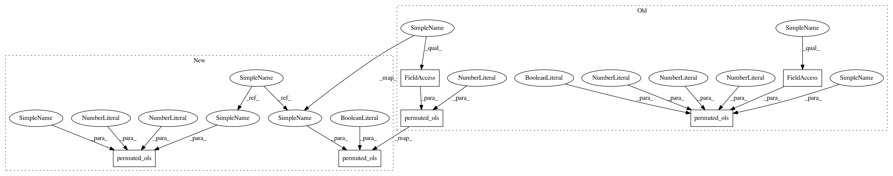

9223931ed397589ce58178461634313012e16e60,nilearn/mass_univariate/tests/test_permuted_least_squares.py,,test_permuted_ols_intercept_statsmodels_withcovar_multivariate,#Any#,333
Before Change
target_vars[:, i], np.hstack((tested_var, confounding_vars)))
fvals[i] = ols.fit().f_test(test_matrix).fvalue[0][0]
// permuted OLS (sparsity_threshold=1. to get all values)
_, all_scores, _, _ = permuted_ols(
tested_var, target_vars.T, confounding_vars, n_perm=0,
sparsity_threshold=1., n_jobs=1)
// same thing but with model_intercept=True to check it has no effect
_, all_scores_addintercept, _, _ = permuted_ols(
tested_var, target_vars.T, confounding_vars, model_intercept=True,
n_perm=0, sparsity_threshold=1., n_jobs=1)
assert_almost_equal(fvals, all_scores["score"], decimal=6)
assert_array_almost_equal(all_scores["score"],
all_scores_addintercept["score"], decimal=6)
After Change
n_targets = 10
n_covars = 2
// create design
target_vars = rng.randn(n_samples, n_targets)
tested_var = np.ones((n_samples, 1))
confounding_vars = rng.randn(n_samples, n_covars)
// statsmodels OLS
fvals = np.empty(n_targets)
test_matrix = np.array([[1.] + [0.] * n_covars])
for i in range(n_targets):
ols = OLS(
target_vars[:, i], np.hstack((tested_var, confounding_vars)))
fvals[i] = ols.fit().f_test(test_matrix).fvalue[0][0]
// permuted OLS (sparsity_threshold=1. to get all values)
_, all_scores, _, _ = permuted_ols(
tested_var, target_vars, confounding_vars, n_perm=0,
sparsity_threshold=1.)
// same thing but with model_intercept=True to check it has no effect
_, all_scores_addintercept, _, _ = permuted_ols(
tested_var, target_vars, confounding_vars, model_intercept=True,
n_perm=0, sparsity_threshold=1.)
assert_almost_equal(fvals, all_scores["score"], decimal=6)
assert_array_almost_equal(all_scores["score"],
all_scores_addintercept["score"], decimal=6)
In pattern: SUPERPATTERN
Frequency: 4
Non-data size: 6
Instances
Project Name: nilearn/nilearn
Commit Name: 9223931ed397589ce58178461634313012e16e60
Time: 2014-02-17
Author: virgile.fritsch@gmail.com
File Name: nilearn/mass_univariate/tests/test_permuted_least_squares.py
Class Name:
Method Name: test_permuted_ols_intercept_statsmodels_withcovar_multivariate
Project Name: nilearn/nilearn
Commit Name: 9223931ed397589ce58178461634313012e16e60
Time: 2014-02-17
Author: virgile.fritsch@gmail.com
File Name: nilearn/mass_univariate/tests/test_permuted_least_squares.py
Class Name:
Method Name: test_permuted_ols_intercept_sklearn_nocovar
Project Name: nilearn/nilearn
Commit Name: 9223931ed397589ce58178461634313012e16e60
Time: 2014-02-17
Author: virgile.fritsch@gmail.com
File Name: nilearn/mass_univariate/tests/test_permuted_least_squares.py
Class Name:
Method Name: test_permuted_ols_intercept_statsmodels_withcovar_multivariate
Project Name: nilearn/nilearn
Commit Name: 9223931ed397589ce58178461634313012e16e60
Time: 2014-02-17
Author: virgile.fritsch@gmail.com
File Name: nilearn/mass_univariate/tests/test_permuted_least_squares.py
Class Name:
Method Name: test_permuted_ols_intercept_statsmodels_withcovar
Project Name: nilearn/nilearn
Commit Name: 9223931ed397589ce58178461634313012e16e60
Time: 2014-02-17
Author: virgile.fritsch@gmail.com
File Name: nilearn/mass_univariate/tests/test_permuted_least_squares.py
Class Name:
Method Name: test_permuted_ols_intercept_sklearn_nocovar_multivariate